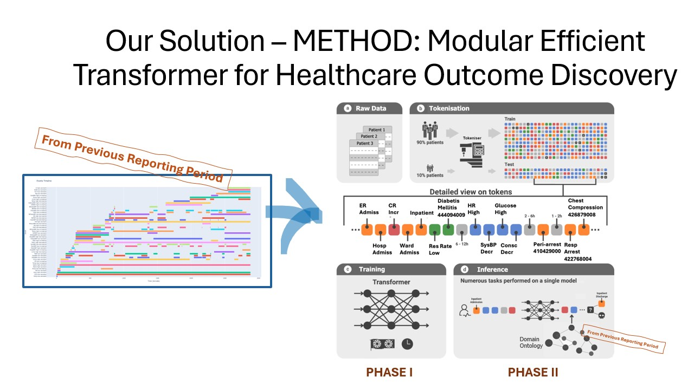

We are the Medical AI Group.
Joseph Arul Raj, Research Associate in Deep Learning for Healthcare Datasets
Bio: Hey! I’m from southern part of India, where I did my bachelor’s in computer science and a postgrad diploma in Big Data Analytics. I spent three years as a data engineer, getting hands-on with data, before moving to the UK for my master’s in Applied Statistical Modelling and Health Informatics. During the master’s, I began working as a research associate, where I started exploring deep learning models for imputation in EHR datasets. I’ve continued that work as a research associate ever since, focusing on making those models smarter and more impactful. My work will focus on enhancing the current state-of-the-art performance in predicting adverse clinical outcomes from hospital Electronic Health Records. GitHub: https://github.com/joseph-arulraj/
- Logan Ellis, H., Palmer, E., Teo, J.T. et al. The early warning paradox. npj Digit. Med. 8, 81 (2025). https://doi.org/10.1038/s41746-024-01408-x
- Raj, J. A., Qian, L., & Ibrahim, Z. (2024). Fine-tuning – a Transfer Learning approach. https://arxiv.org/abs/2411.03941
- Qian, L., Wang, T., Wang, J., Ellis, H. L., Mitra, R., Dobson, R., & Ibrahim, Z. (2025). How Deep is your Guess? A Fresh Perspective on Deep Learning for Medical Time-Series Imputation
- Du, W., Wang, J., Qian, L., Yang, Y., Ibrahim, Z., Liu, F., Wang, Z., Liu, H., Zhao, Z., Zhou, Y., Wang, W., Ding, K., Liang, Y., Prakash, B. A., & Wen, Q. (2024). TSI-Bench: Benchmarking Time Series Imputation
- Qian, L., Yang, Y., Du, W., Wang, J., Dobsoni, R., & Ibrahim, Z. (2025). Beyond Random Missingness: Clinically Rethinking for Healthcare Time Series Imputation.
- Qian, L., Ibrahim, Z., & Dobson, R. (2024). Uncertainty-Aware Deep Attention Recurrent Neural Network for Heterogeneous Time Series Imputation.
- Qian, L., Raj, J. A., Ellis, H. L., Zhang, A., Zhang, Y., Wang, T., Dobson, R. J., & Ibrahim, Z. (2024). Knowledge Enhanced Conditional Imputation for Healthcare Time-series
- Wu, J., Kim, Y., Keller, E. C., Chow, J., Levine, A. P., Pontikos, N., Ibrahim, Z., Taylor, P., Williams, M. C., & Wu, H. (2024). Exploring Multimodal Large Language Models for Radiology Report Error-checking
- Morris AC, Ibrahim Z, Moghraby OS, et al. DIGITAL HEALTH. 2023;9. Moving from development to implementation of digital innovations within the NHS: myHealthE, a remote monitoring system for tracking patient outcomes in child and adolescent mental health services.
- Searle, T., Ibrahim, Z., Teo, J., & Dobson, R. J. B. (2023). Discharge summary hospital course summarisation of in patient Electronic Health Record text with clinical concept guided deep pre-trained Transformer models. Journal of Biomedical Informatics, 141, 104358.
- Morris, A.C., Ibrahim, Z., Heslin, M., Moghraby, O.S., Stringaris, A., Grant, I.M., Zalewski, L., Pritchard, M., Stewart, R., Hotopf, M., Pickles, A., Dobson, R.J.B., Simonoff, E. and Downs, J. (2023), Assessing the feasibility of a web-based outcome measurement system in child and adolescent mental health services – myHealthE a randomised controlled feasibility pilot study. Child Adolesc Ment Health, 28: 128-147.
- Addressing Class Imbalance in Electronic Health Records Data Imputation, Qian, L; Ibrahim, Z; Zhang, A; Dobson, RJB; (2023) Addressing Class Imbalance in Electronic Health Records Data Imputation. In: Proceedings of the 6th International Workshop on Knowledge Discovery From Healthcare Data. CEUR Workshop Proceedings
- Kostyrka-Allchorne, K., Ballard, C., Byford, S. et al. The feasibility of a strategy for the remote recruitment, consenting and assessment of recent referrals: a protocol for phase 1 of the On-Line Parent Training for the Initial Management of ADHD referrals (OPTIMA). Pilot Feasibility Stud 8, 1 (2022).
- Searle, T., Ibrahim, Z., Teo, J., & Dobson, R. (2022). Summarisation of Electronic Health Records with Clinical Concept Guidance.
- Sharapova, N., Maxwell, J. M., Hagenaars, S. P., Russell, R. A., Ibrahim, Z. M., & Lewis, C. M. (2022, October). Model Complexity and Explainability in Prediction for Coronary Artery Disease in the UK Biobank. In GENETIC EPIDEMIOLOGY (Vol. 46, No. 7, pp. 531-531). 111 RIVER ST, HOBOKEN 07030-5774, NJ USA: WILEY.
- Deng, Y. et al. (2022). Multi-modal Latent-Space Self-alignment for Super-Resolution Cardiac MR Segmentation. In: Camara, O., et al. Statistical Atlases and Computational Models of the Heart. Regular and CMRxMotion Challenge Papers. STACOM 2022. Lecture Notes in Computer Science, vol 13593. Springer, Cham.
- Mahabadi, Z., Mahabadi, M., Velupillai, S., Roberts, A., McGuire, P., Ibrahim, Z., & Patel, R. (2022). Evaluating physical urban features in several mental illnesses using electronic health record data. Frontiers in Digital Health
- Guy P Hunt, Luigi Grassi, Rafael Henkin, Fabrizio Smeraldi, Thomas P Spargo, Renata Kabiljo, Sulev Koks, Zina Ibrahim, Richard J B Dobson, Ammar Al-Chalabi, Michael R Barnes, Alfredo Iacoangeli, GEOexplorer: a webserver for gene expression analysis and visualisation, Nucleic Acids Research, Volume 50, Issue W1, 5 July 2022, Pages W367–W374
- Searle, T., Ibrahim, Z., Teo, J., & Dobson, R. (2021). Estimating redundancy in clinical text. Journal of Biomedical Informatics, 124, 103938
- Kraljevic, Z., Searle, T., Shek, A., Roguski, L., Noor, K., Bean, D., Mascio, A., Zhu, L., Folarin, A. A., Roberts, A., Bendayan, R., Richardson, M. P., Stewart, R., Shah, A. D., Wong, W. K., Ibrahim, Z., Teo, J. T., & Dobson, R. J. B. (2021). Multi-domain clinical natural language processing with MedCAT: The Medical Concept Annotation Toolkit. Artificial Intelligence in Medicine, 117, 102083
- Z. M. Ibrahim et al., "A Knowledge Distillation Ensemble Framework for Predicting Short- and Long-Term Hospitalization Outcomes From Electronic Health Records Data," in IEEE Journal of Biomedical and Health Informatics, vol. 26, no. 1, pp. 423-435, Jan. 2022, doi: 10.1109/JBHI.2021.3089287.
- Honghan Wu, Huayu Zhang, Andreas Karwath, Zina Ibrahim, Ting Shi, Xin Zhang, Kun Wang, Jiaxing Sun, Kevin Dhaliwal, Daniel Bean, Victor Roth Cardoso, Kezhi Li, James T Teo, Amitava Banerjee, Fang Gao-Smith, Tony Whitehouse, Tonny Veenith, Georgios V Gkoutos, Xiaodong Wu, Richard Dobson, Bruce Guthrie, Ensemble learning for poor prognosis predictions: A case study on SARS-CoV-2, Journal of the American Medical Informatics Association, Volume 28, Issue 4, April 2021, Pages 791–800
- The side effect profile of Clozapine in real world data of three large mental health hospitals, Iqbal E, Govind R, Romero A, Dzahini O, Broadbent M, et al. (2020) The side effect profile of Clozapine in real world data of three large mental health hospitals. PLOS ONE 15(12): e0243437. https://doi.org/10.1371/journal.pone.0243437
- Roubroeks, J. A. Y., Smith, A. R., Smith, R. G., Pishva, E., Ibrahim, Z., Sattlecker, M., Hannon, E. J., Kłoszewska, I., Mecocci, P., Soininen, H., Tsolaki, M., Vellas, B., Wahlund, L.-O., Aarsland, D., Proitsi, P., Hodges, A., Lovestone, S., Newhouse, S. J., Dobson, R. J. B., … Lunnon, K. (2020). An epigenome-wide association study of Alzheimer’s disease blood highlights robust DNA hypermethylation in the HOXB6 gene. Neurobiology of Aging, 95, 26–45. https://doi.org/10.1016/j.neurobiolaging.2020.06.023
- Sharapova, N., Maxwell, J. M., Glanville, K., Hagenaars, S. P., Russell, R., Ibrahim, Z. M., & Lewis, C. M. (2020, July). Added value of biomarkers and polygenic risk scores as risk factors for coronary artery disease. In GENETIC EPIDEMIOLOGY (Vol. 44, No. 5, pp. 516-516). 111 RIVER ST, HOBOKEN 07030-5774, NJ USA: WILEY.
- Searle, T., Ibrahim, Z., & Dobson, R. (2020). Experimental Evaluation and Development of a Silver-Standard for the MIMIC-III Clinical Coding Dataset. Proceedings of the 19th SIGBioMed Workshop on Biomedical Language Processing.
- Searle, T., Ibrahim, Z., & Dobson, R. (2020). Comparing Natural Language Processing Techniques for Alzheimer’s Dementia Prediction in Spontaneous Speech.
- Zina M Ibrahim, Honghan Wu, Ahmed Hamoud, Lukas Stappen, Richard J B Dobson, Andrea Agarossi, On classifying sepsis heterogeneity in the ICU: insight using machine learning, Journal of the American Medical Informatics Association, Volume 27, Issue 3, March 2020, Pages 437–443
- Bendayan, R., Wu, H., Kraljevic, Z., Stewart, R., Searle, T., Chaturvedi, J., Das-Munshi, J., Ibrahim, Z., Mascio, A., Roberts, A., Bean, D., & Dobson, R. (2020). Identifying physical health comorbidities in a cohort of individuals with severe mental illness: An application of SemEHR.
METHOD: Modular Efficient Transformer for Health Outcome Discovery

Background and Motivation: Patient deterioration is not a sudden event. In general ward settings, vital signs and test results are often abnormal or trending toward abnormal hours before cardiac arrest or intensive care unit (ICU) transfer. Doctors (esp junior) and nurses use scoring tools to estimate deterioration risk. The National Early Warning Score (NEWS2) is the current standard tool in NHS England and allocates points based on the deviation of a physiological variable from ‘normal’ using cutoff values. NEWS2 is well-accepted by the primary stakeholders (clinical staff) due to the provision of straightforward metrics directly connected to known guidelines and NEWS2 has been linked to some improvement in predicting adverse events. As a result, several monitoring systems have been implemented to automatically calculate NEWS2 and alert clinical workers as soon as patients show signs of deterioration. However, such systems still suffer from low sensitivity and high false alarm rates, and staggering inability to predict in-hospital cardiac arrest (IHCA) compared to mortality. Neural Networks (NNs) and Deep learning (DL) models promised sophisticated architectures that improve predictive power by exploiting the deluge of multi-modal data ushered by Electronic Health Records (EHRs). Nevertheless, successful deployment of DL-based EWS (DEWS) beyond controlled experiments is absent. The black-box nature of such systems has led to failure to gain stakeholder trust, and issues around the robustness, reproducibility and hype surrounding DEW have been put in the spotlight.
In successful DL-based medical applications, such as radiology and ECG analysis support, interpolation of highly-dimensional continuous data to unearth statistical regularities is the primary driver of innovation. In contrast, the pragmatic requirements of clinically-useful EWS present a number of challenges that DL-based models cannot tackle alone:
The Irony of Context: No single variable value or combination of values will identify early deterioration in all patients. Rather information is integrated from combinations of monitored variables to gain a full picture of a patient's condition; a process which is highly dependent on the clinical context surrounding the patient and which remains subject to clinical judgement. Context enriches the clinical process, yet it ironically serves the opposite purpose for a DL model: diversity increases the amount of data required to robustly train a DL model as well as the size of the generated network. Unlike in intensive settings where monitoring is continuous, vital signs used to detect clinical deterioration (e.g. heart rate, respiratory rate, oxygen saturation and temperature) are intermittently checked by nursing staff every few hours in general wards. Under such settings, DL models’ performance quickly plummets because the lower sampling rate means less data is available to account for contextual variations. Few-shot learning, which trains models from limited examples, and transformer-based attention, which dynamically incorporate context-specific logic into DL models, provide different solutions to the limited-data problem. However, transformers have been shown to be unable to do so without introducing bias, and few-shot learning models are known to exhibit limited generalisation capabilities. Hence, such frameworks cannot be assumed to reliably learn context-dependent knowledge in sensitive applications such as EWS.
Lack of Domain-relevant Interpretability: Clinical scoring tools are inherently interpretable linear models; they allow healthcare staff to understand the EWS output in the context of their knowledge, established guidelines and the patient’s condition. Although Machine Learning (ML) interpretability has become an essential addition to black-box models, current interpretability frameworks rely on post-hoc associative inference between features and output. They operate in the absence of traceability to domain knowledge and are, therefore, not cognizant of the analytical processes and established methodologies of evidence-based medical decision making. More seriously, because DL interpretations are strictly data-centred, they are not robust to data perturbation and can be highly skewed by the biases learned by the predictive models.
Data Bias: Unlike signals, clinical data is prone to human biases. For instance, intensivists tend to show prognostic pessimism for haematological malignancies; these are inevitably learned by the DL model. Current efforts mitigate such risk by incorporating ML interpretability for transparent reporting. But such interpretations are prone to the data biases themselves.
The above challenges inspire the premise underlying this proposal: Establishing clinically-useful computational EWS that improve the performance of score-based systems is not achievable via deep learning alone. Instead, it requires the joint ability to extrapolate from clinical context and established guidelines and to perform data-driven interpolative prediction.
Vision: There is clear potential to design computational EWS that satisfy stakeholder requirements by aligning the prediction and explanation processes with clinical decision making, and substantially improving robustness under settings where data is sparse. Such vision requires a paradigm shift from pure DL-based platforms where large black-box networks are trained using even larger amounts of data. Instead, we aim to employ the existing compendium of rich domain knowledge to steer and meaningfully interpret an ML model’s output via a neuro-symbolic design of specialised interacting components. Here, principled knowledge representation and reasoning captures clinical guidelines as relational structures that are fed into the learning process, steering it towards smaller and contextually-relevant networks requiring less training. Such design will also yield robust explanations by deliberating established knowledge and guidelines.